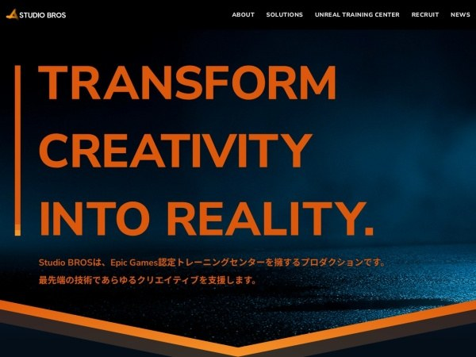

歷史參考｜2023 年 UE5 即時視覺化教材：CAD、燈光、VR 與互動展示
這份 2023 年資料介紹一本 UE5 入門書，內容從 CAD 匯入與 DataPrep、材質燈光、後製與即時光追，延伸到 VR、Movie Render Queue 及互動 Blueprint。

Unreal ★★★☆☆
完整分析
CAD 視覺化技術流程
教材涵蓋 DataPrep 轉換 CAD 組件、跨專案 Migration、Megascans、材質、燈光、後製、渲染與 VR 輸出，也包含即時光線追蹤基礎。
互動展示製作影響
Blueprint 範例包含燈光開關、選配零件、Timeline 開合、Widget UI 與 Variant Manager，讓工業產品展示不只停留在靜態畫面。
歷史內容限制
書籍於 2022 年底推出、本文發布於 2023 年，還包含 UE4 專案沿用內容；現行 UE5 介面、即時光追與外掛流程需依新版文件重驗。
BRIEF｜來源已驗證；證據深度較有限，完整分析會明確區分已知資訊與待驗證事項。